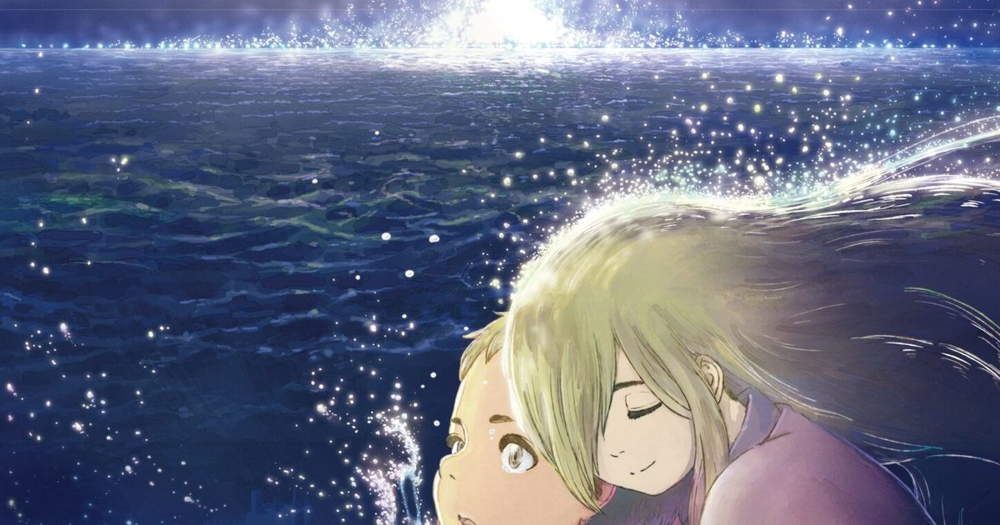

2026-08-21 · 动漫深读
今天（8 月 21 日），新宿 Wald 9 以及日本全国影院，会陆续亮起一部只有 36 分钟的动画电影《不知火（しらぬひ / Shiranui）》。它挂着「你的名字。／铃芽之旅」的娘家 CoMix Wave Films 出品，导演却是个在超市鲜鱼区打工、靠独立影像慢慢爬上来的新人片野坂亮。一部短到几乎没人会专门飞日本看的片子，为什么值得我们今天单独写一笔？

先说结论：《不知火》最值得关注的，不是它有多大，而是它「从哪来」。CoMix Wave Films（CWF）这几年的打法很明确——用新海诚撑起商业天花板，同时悄悄孵化新导演。片野坂亮就是被这套机制捞起来的人：他在超市卖鱼、业余拍真人短片和动画，被 CWF 看中后拿到资源做长片级制作。这种「工作室当孵化器」的路线，和 Pixar 早期、或吉卜力培养宫崎吾朗的思路一脉相承，但在今天的日本动画界相当稀缺。
再看班底，几乎是把「文艺保证」堆满了：音乐是梅林太郎（《Yuri!!! on ICE》《夏日幽灵》班底），主题曲交给青叶市子（代表作《Windswept Adan》《AMIKO》）——两人本就有过专辑共编的默契；配音阵容里，花泽香菜配少女神明「小弁（べんちゃん）」，三木真一郎配关键角色，主演少年「凑」由歌手 ano 献声。36 分钟、GAGA 发行，定位更像一部「作者向展演短篇」而非商业大作。
舞台是 1996 年夏末，熊本海边的小镇。10 岁的凑，和酗酒的父亲两个人，过得小心翼翼。他唯一的心灵寄托，是出现在弁天岛上的少女神明——小弁。只有在她身边，凑才找得回自己。可一纸决定把凑送进儿童养护设施，他与小弁分别的倒计时，已经开始走动。
这时候，他向漂浮在海面上、据说「能实现一个愿望」的神秘之光「不知火」祈祷。而凑许下的愿望，是父亲的死。随着对父亲的憎恨日复一日加深，这份祈祷，渐渐变成了无法挽回的「诅咒」。官方用一句话定义它：「一个从没被爱过的少年，以自己的存在为代价祈愿毁灭的、爱的故事。」——注意，是「爱」，不是「恨」。这层反转，是整部片最锋利的地方。
从已公开的特报看，画面把「昼夜交界的天空」和「夏末蝉鸣里的海岛」做成了情绪容器：母亲曾向不知火许愿变成鲸鱼，凑攥着遗留的鲸鱼耳饰，情绪在「想要父亲死」和「被恨吞噬」之间爆发。CWF 最擅长的「日本原风景 + 情绪特写」，在这里被一个更私人、更暗的叙事接管。
很多人看到 CWF 出品就自动脑补「新海诚式唯美恋」。但《不知火》的母题明显更狠：它不靠「错过与重逢」的浪漫，而靠「被 neglect（忽视）的童年如何长出诅咒」的写实痛感。片野坂亮不是新海诚的影子，他带的是自己鲜鱼区打工、独立影像出身的作者性——更糙，也更贴地。
这恰恰是 CWF 这条孵化路线的价值：如果所有新人都被压成「小新海诚」，工作室就失去了未来。把 36 分钟短篇当作「新导演的亮相舞台」，让片野坂用更私人的题材试水温，比直接塞进一部商业长片更安全，也更有信号意义。对观众而言，今天进影院看的，不止是一部动画，是一次「下一个作者会不会从这儿长出来」的押注。
另一个现实角度：它目前只在日本院线（GAGA 发行），流媒窗口未定。对海外观众，真正的观看机会大概率要等到后续上架。所以今天的「上映日」更像一枚信号弹——它告诉我们，CWF 的下一棒，已经递到了片野坂亮手里。
我们的评分 作者性 8.4 / 可看性 7.6。班底和母题都够硬，但 36 分钟的容量决定了它更像「展品」而非「爆款」，海外观众还需等窗口。
我们的观察 CWF 用商业片养新人这条路线越来越清晰：新海诚负责高度，片野坂这类新人负责「下一代的脸」。一部短篇，其实是工作室的招聘启事。
我们的观点 别把它当「新海诚平替」看。它的痛感来自被忽视的童年，而不是错过的恋爱——这正是它最该被单独看见的理由。标签化会害你错过一部真有作者性的片子。
我们的案例 / 对比 对比《铃芽之旅》的「灾难 + 救赎」浪漫，与《不知火》的「 neglect + 诅咒」写实：同样出自 CWF，前者向外（社会），后者向内（个体）。同一栋厂房，两副截然不同的肺。
我们的实验 给三类观众：① 在日本的——今天就去 Wald 9 这类院线，短篇 + 大银幕气氛最对味；② 海外的——别急着找盗源，等 GAGA 后续流媒上架，画质和字幕都更稳；③ 作者向爱好者——盯紧片野坂亮下一部，这人很可能就是 CWF 的下一颗棋子。
《不知火》只有 36 分钟，却把一个「从没被爱过」的少年，安放进新海诚工作室的光影里。它今天在日本亮灯，不止为一部短片，更为 CoMix Wave Films 的下一棒接力。对我们这些隔着海看的人来说，记住一句话就够了：当一部片子敢把「爱」定义为「以自己的存在为代价祈愿毁灭」，它就不该被轻易归类为又一部「唯美动画」。